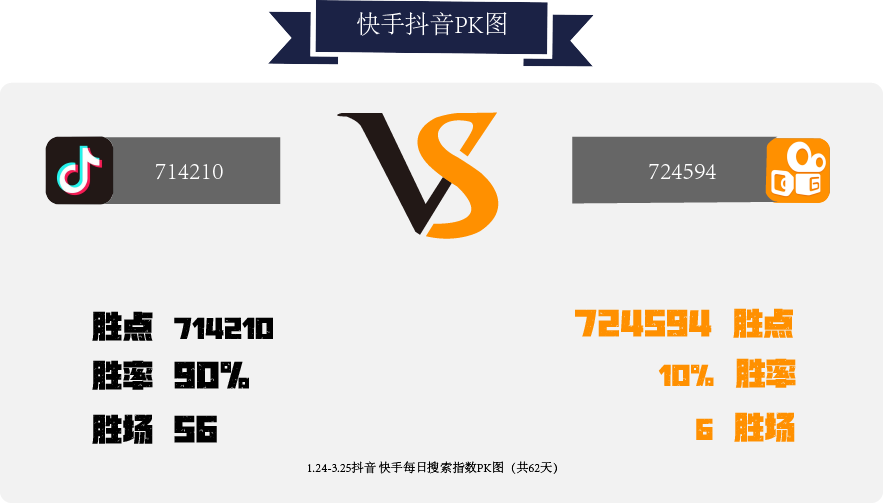
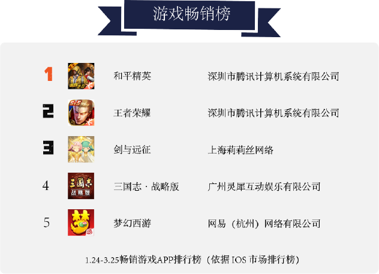
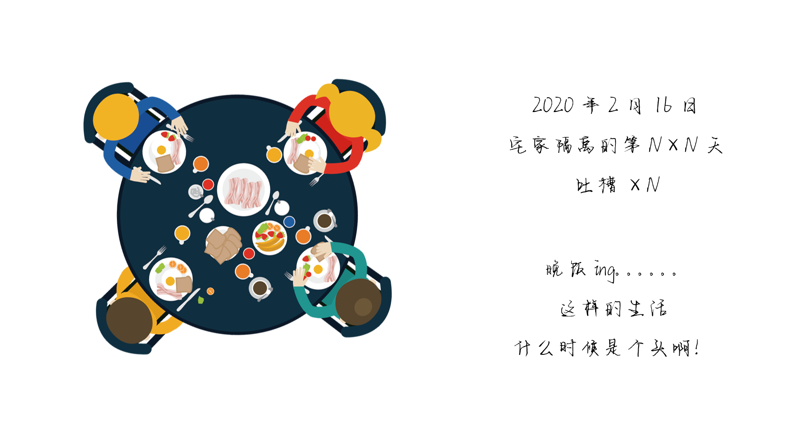

于2002年在中国广东发生，并扩散至东南亚至全球，直至2003年中期疫情才被逐渐消灭的一次全球性传染病疫潮。
中国各省新冠累计确诊实时数据
(截止更新至2020年7月5日)
(截止更新至2020年7月5日)
此次席卷全球的新冠疫情影响着地球上每个人
一位普通中国公民在此期间用日记纪录下了他们一家的隔离生活
Diaries from the quarantine period

疫情叠加春节，影响了人们的正常生活，互联网行业的时长格局因此较2019年发生了较大变化
短视频因为此次疫情，展现出了非凡的活跃度，抖音与快手更是表现出分庭抗礼的架势
在疫情中宅家的人们，将生活的趣味寄托于游戏上，众多游戏脱颖而出，吸引了更多国人的眼球
电影院因为疫情无法正常营业，视频软件成为人们的首选，满足人们对文化的需求，各大视频软件人均使用时长也因此增加
因为疫情宅在家无法相见的人们使用移动社交APP更加频繁，直接导致了在此期间社交移动APP日活跃用户规模增加

下厨房APP被许多因疫情宅在家的人使用，在同类产品中取得较好口碑，活跃用户规模逐渐增多
春节碰上疫情，餐饮企业响应国家号召，完全停止营业的企业出奇的多

痛苦的日子终于算是过去，每个人又会投入到各自正常的生活中
然而我们不能忘记那些痛苦心酸但却温暖的瞬间，更不能忘记那些负重前行让我们重获幸福的人
因疫情严重，各种疫情数据庞大冗杂，医院信息化建设随之加强，信息化工作者占比大
除了这次新冠疫情，历史上还发生过许多公共卫生事件，影响巨大，波及范围广
从2003年的非典到2020年的新型冠状病毒肺炎
一次又一次的疫情在告诫我们人类
要对自然怀有敬畏之心，尊重生命，敬畏自然